Dynamic Equations For The
First Stage Of The 2-DOF Serial Flexible Link (2DSFL) Robot
©
2008 Quanser Consulting Inc.
URL:
http://www.quanser.com
Description
-
This worksheet presents the general dynamic equations modelling the First Stage Of Quanser's 2-DOF Serial Flexible Link (2DSFL) Robot, assuming a decoupled modelling.
-
This worksheet derives the state-space matrices used in the control implementation.
-
The Lagrange's method is used to obtain the dynamic model of the system.
The
Quanser_Tools
Package
-
The
Quanser_Tools
module defines generic procedures and data in relation to determining the state-space representation of all the Quanser experiments. Specifically, this means deriving and solving the Lagrange's equations of the Quanser systems.
-
The
quanser
repository containing the
Quanser_Tools
package is implemented in the 2 following files:
quanser.ind
and
quanser.lib.
If these two files are not readily available, they can be generated by executing the Maple worksheet titled:
quanser_tools.mws
.
-
To install
the
Quanser_Tools
package, copy the two files
quanser.ind
and
quanser.lib
into a directory of your choice, like for example: "C:\Program Files\Quanser\Maple Repository".
-
To use
the
Quanser_Tools
package in a Maple worksheet, add the path to its disk location to the Maple global variable
libname
. For example, this can be achieved by the following Maple command:
libname :=
"C:/Program Files/Quanser/Maple Repository", libname:
Worksheet Initialization
| > |
restart: interface( imaginaryunit = j ):
|
| > |
libname := "C:/Program Files/Quanser/Maple Repository", ".", libname:
|
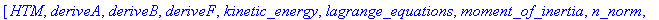
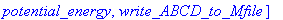
environment variable representing the order of series calculations
Notations
Generalized Coordinates:
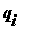
's
The generalized coordinates are also called Lagrangian coordinates.
= driving shaft (of harmonic drive #1) angular position: the zero angle is defined as the starting position.
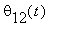
= first link (absolute) end-effector angular position: the zero angle is defined as the starting position.
| > |
q := [ theta[11](t), theta[12](t) ];
|
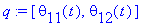
Nq = number of Lagrangian coordinates (e.g. here, it is Nq = 2)
Nq is also the number of position states.
qd = first-order time derivative of the generalized coordinates, e.g. position and angular velocities
| > |
qd := map( diff, q, t );
|
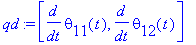
State-Space Variables
-
The chosen states should at least include the generalized coordinates and their first-time derivatives.
-
X is the state vector.
-
In the state vector X: Lagrangian coordinates are first, followed by their first-time derivatives, and finally any other states, as required.
Substitution sets for the states (to obtain time-independent state equations).
| > |
subs_Xq := { seq( q[i] = X[i], i=1..Nq ) };
subs_Xqd := { seq( qd[i] = X[i+Nq], i=1..Nq ) };
|
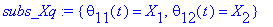
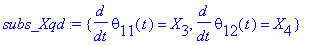
Substitution set for the input(s).
set the input to be the motor #1 current:
| > |
subs_U := { I[m1] = U[1] }:
|
set the input to be the actuator driving force/torque (if not expressed as a function of the motor voltage):
| > |
#subs_U := { T[1] = U[1] }:
|
Nu = number of inputs; U = input (row) vector (e.g. U = [ V[m] ] )
substitution set for the position states' second time derivatives
| > |
subs_Xqdd := { seq( diff( q[i], t$2 ) = Xd[i+Nq], i=1..Nq ) };
|
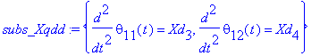
second time derivatives of the position states (written as time-independent variables).
The set of unknowns is obtained from this list to solve the Lagrange's equations of motion.
| > |
Xqdd := [ seq( Xd[i+Nq], i=1..Nq ) ];
|
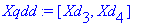
substitution set to linearize the state-space matrices (i.e. A and B)
about the quiescent null state vector (small-displacement theory)
| > |
subs_XUzero := { seq( X[i] = 0, i=1..2*Nq ), seq( U[i] = 0, i=1..Nu ) }:
|
Nx = dim( X ) = total number of states (should be greater than or equal to: 2 * Nq)
Ny = chosen number of outputs
| > |
Nx := 2 * Nq + 0:
Ny := Nq:
|
Total Potential and Kinetic Energies of the System
The total potential and kinetic energies are needed to calculate the Lagrangian of the system.
Total Potential Energy:
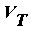
The total potential energy can be expressed in terms of the generalized coordinates alone.
Vg[T] = Total Gravitational Potential Energy of the system
Vg[T] = 0 : Because the load vertical displacement from normality is null.
Ve[T] = Total Elastic Potential Energy of the system
K[s1] = first flexible link torsional stiffness
| > |
Ve[T] := potential_energy( 'spring', K[s1], q[2] );
|
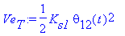
V[T] = Total Potential Energy of the system
| > |
V[T] := simplify( Ve[T] + Vg[T] );
|
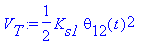
Total Kinetic Energy:
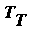
The total kinetic energy can be expressed in terms of the generalized coordinates and their first-time derivatives.
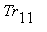
= rotational kinetic energy of the first motorized rigid joint (holding the flexible link)
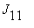
= harmonic drive #1 equivalent output load inertia
qd[1] = drive #1 load angular velocity
| > |
Tr[11] := kinetic_energy( 'translation', J[11], qd[1] );
|
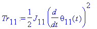
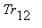
= rotational kinetic energy of the first flexible link end-effector (compounded with the second link assembly)
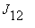
= first flexible link end-effector load inertia compounded with the second link assembly
qd[2] = first link end-effector angular velocity
| > |
Tr[12] := kinetic_energy( 'translation', J[12], (qd[1] + qd[2]) );
|
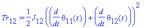
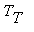
= Total Kinetic Energy of the system
| > |
T[T] := Tr[11] + Tr[12]:
|
| > |
T[T] := collect( T[T], diff );
|
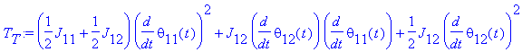
Generalized Forces:
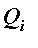
's
The non-conservative forces corresponding to the generalized coordinates are:
![T[1]](images/2DSFL_Stage1_Equations25.gif) and the viscous damping forces, where
and the viscous damping forces, where
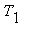
= torque generated by the motor #1
B11 = first actuated rigid joint viscous damping coefficient
B12 = first link end-effector viscous damping coefficient (with the second link connected)
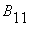
= 0 and
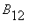
= 0 if both viscous dampings are neglected
| > |
#B[11] := 0: B[12] := 0:
|
Q[i] = generalized force applied on generalized coordinate q[i]
| > |
Q[1] := T[1] - B[11] * qd[1];
|
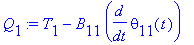
| > |
Q[2] := - B[12] * qd[2];
|
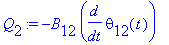
![T[1]](images/2DSFL_Stage1_Equations31.gif) = torque produced by drive #1 at the load: load driving torque
= torque produced by drive #1 at the load: load driving torque
rm: comment the following line out if U = T[1], uncomment it if U = I[m]
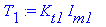
| > |
Q := [ seq( Q[i], i=1..Nq ) ];
|
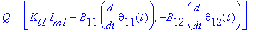
Euler-Lagrange's Equations
For a
N
-DOF system, the Lagrange's equations can be written:
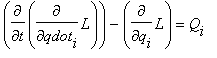
for
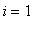
through
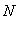
where:
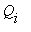
's are special combinations of external forces and called the
generalized forces,
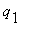
, ...,
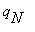
, are
N
independent coordinates chosen to describe the system and called the
generalized coordinates
,
and
 is the
Lagrangian
of the system.
is the
Lagrangian
of the system.
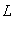
is defined by:
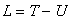
where
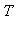
is the total kinetic energy of the system and
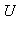
the total potential energy of the system.
| > |
EOM_orig := lagrange_equations( T[T], V[T], q, Q ):
|
this is to display the EOM's
| > |
EOM_orig := collect( EOM_orig, { seq( diff( q[i], t$2 ), i=1..Nq ), seq( diff( q[i], t ), i=1..Nq ), seq( q[i], i=1..Nq ) } );
|
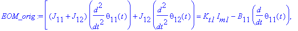
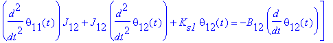
Express the Euler-Lagrange equations of motion as functions of the states:
1) substitute (i.e. name) the acceleration states first!
2) then substitute the velocity states!
3) and only after, the position states, and the inputs!
| > |
EOM_states := subs( subs_Xqd, subs( subs_Xqdd, EOM_orig ) ):
|
| > |
EOM_states := subs( subs_Xq, subs_U, EOM_states );
|
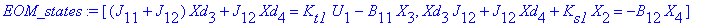
Additional Insight: Inertia (or mass) Matrix: Fi
The nonlinear system of equations resulting from the Lagrangian mechanics can be written in the following matrix form:
F( q ) . qdd + G( q, qd ) . qd + H( q ) . q = L( q, qd, u )
F, G, and H are called, respectively, the mass, damping, and stiffness matrices.
They are symmetric in form.
The inertia (a.k.a. mass) matrix, F, gives indications regarding the coupling existing in the system.
| > |
Fi := Matrix( Nq, Nq ):
|
| > |
for i from 1 to Nq do
for k from 1 to Nq do
Fi[ i, k ] := simplify( diff( op( 1, EOM_states[i] ), Xd[k+Nq] ) );
Fi[ i, k ] := collect( combine( Fi[ i, k ], trig ), cos );
end do;
end do:
|
Here, Fi shows a linear system
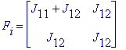
Solving the Euler-Lagrange's Equations
Reverse State Substitution for Pretty Display of the Solved EOM's
only for pretty print
| > |
subs_Xq_rev := { seq( X[i] = q[i], i=1..Nq ) }:
subs_Xqd_rev := { seq( X[i+Nq] = qd[i], i=1..Nq ) }:
|
| > |
#subs_U_rev := { U[1] = I[m1] }:
subs_U_rev := { U[1] = T[1] }:
|
| > |
eom_collect_list := { seq( diff( q[i], t ), i=1..Nq ), seq( q[i], i=1..Nq ), K[s1] };
|
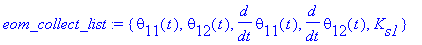
Solution to the (Linear) EOM's
Solve the (linear) equations of motion for the states' second time derivatives
| > |
Xqdd_solset_ser := solve( convert( EOM_states, set ), convert( Xqdd, set ) );
|
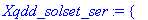
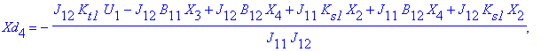
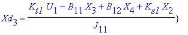
| > |
assign( Xqdd_solset_ser );
|
pretty display w.r.t. the named system states
| > |
diff( qd[1], t ) = collect( subs( subs_U_rev, subs_Xq_rev, subs_Xqd_rev, Xd[3] ), eom_collect_list );
|
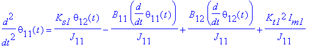
| > |
diff( qd[2], t ) = collect( subs( subs_U_rev, subs_Xq_rev, subs_Xqd_rev, Xd[4] ), eom_collect_list );
|
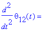
Determine the System State-Space Matrices: A, B, C, and D
| > |
A_ss := Matrix( Nx, Nx ):
|
| > |
A_ss := deriveA( Xqdd, A_ss, Nq, subs_XUzero ): 'A1' = A_ss;
|
| > |
B_ss := Matrix( Nx, Nu ):
|
| > |
B_ss := deriveB( Xqdd, B_ss, Nq, subs_XUzero ): 'B1' = B_ss;
|
| > |
#C_ss := IdentityMatrix( Ny, Nx ):
C_ss := IdentityMatrix( Nx, Nx ):
'C1' = C_ss;
|
| > |
D_ss := Matrix( Nx, Nu, 0 ):
'D1' = D_ss;
|
Write A, B, C, and D to a Matlab file
Save the state-space matrices A, B, C and D to a MATLAB file.
| > |
Matlab_File_Name := "eqn_2DSFL_Stage1.m":
|
unassign variables, when necessary, for those present in the "Matlab_Notations" substitution set
| > |
if assigned( B[11] ) then
unassign( 'B[11]' );
end if;
|
| > |
if assigned( B[12] ) then
unassign( 'B[12]' );
end if;
|
substitution set containing a notation consistent with that used in the MATLAB design script(s)
| > |
Matlab_Notations := { J[11] = J11, J[12] = J12, K[s1] = Ks1, B[11] = B11, B[12] = B12, K[t1] = Ktg1}:
|
| > |
Experiment_Name := "2-DOF Serial Flexible Link Robot (First Stage)":
|
| > |
write_ABCD_to_Mfile( Matlab_File_Name, Experiment_Name, Matlab_Notations, A_ss, B_ss, C_ss, D_ss );
|
Procedure Printing
default:
| > |
#interface( verboseproc = 1 );
|
| > |
eval( lagrange_equations ):
|
Click here to go back to top: Description Section.